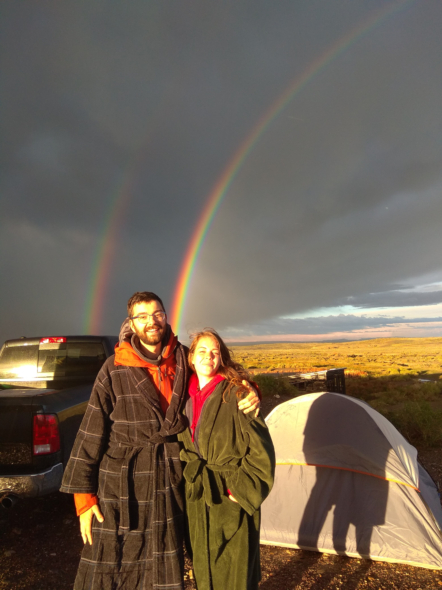

The Venue
We're getting married in Golden, Colorado. About 40 minute drive from Denver Airport. The adress is: 403 Blue Ridge Road, Golden, Co 80401.
Hotels near by
Origin Hotel Red Rocks is a 10 minute uber from our venue. There are other places close by too.
Getting there
There is a busline that stops a 10 minute walk from the venue and the venue is accesible by both lift en uber. There is limit parking available on the venue, so carpooling is highly recommended.

Camping
Can I camp on the venue? Yes, you can! There is plenty of space available for you to pitch your tent and we should have room for some RV's. Please contact us if your planning on camping here, so we know how many people to expect. We have the place from the 28th of july until the 30th. You're welcome to camp for the extra days.
You have to bring your own food and drinks for the non-wedding days. But there are four big grills to heat any food on. Please mind that we have to be out on 10.00 on Sunday and the place has to be tidy.